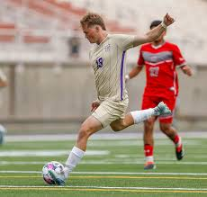
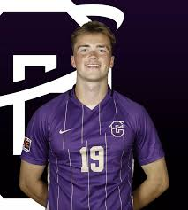

Griffin was raised in Boise, Idaho, where he grew up playing soccer and achieving academic greatness. In high school, he achieved 2 Athletic Academic Awards, and received the honors of 1st team All-State for soccer. After he graduated high school, from Centennial High School in 2021, he attended North Idaho College and received his associates degree and he scored 5 goals and 6 assists.
After a successful two years in beautiful Coeur d'Alene, Idaho, he relocated to Helena, Montana and began working. When he transferred on to the Carroll College men's soccer team, he brought with him a team-leading GPA of 4.0, which he has maintained throughout his time at Carroll. Griffin’s academics clearly speak for themselves, but his intelligence really shines through on the pitch. Griffin helped lead a struggling Carroll side reach the Cascade Conference playoffs in his first season, a task not completed by a Carroll men’s soccer team in 5 years.
This year looks no different, as Griffin has proven his skills and intellect to be invaluable to his team. After a breakout start to the 2023/2024 season, Griffin has solidified his spot in the starting lineup and has contributed to the early success of Carroll College’s new campaign. The first goal scored by the Carroll College men’s soccer team on the new turf in Nelson Stadium was scored by Carroll’s very own, Griffin Teuber. The new season and academic semester is an exciting time for Griffin, as he looks to improve upon his tremendous start to his final season in collegiate soccer, and maintain his perfect GPA.